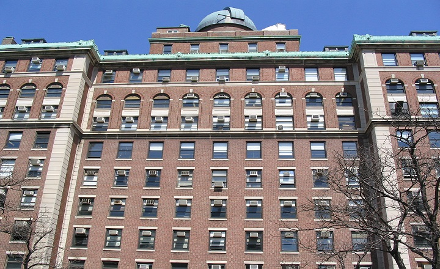

Mihajlo Pupin foundation
In 1914, Pupin formed "Fund Pijade Aleksić-Pupin" within the Serbian Academy of Sciences and Arts[19] to commemorate his mother Olimpijada for all the support she gave him through life. Fund assets were used for helping schools in old Serbia and Macedonia, and scholarships were awarded every year on the Saint Sava day. One street in Ohrid was named after Mihajlo Pupin in 1930 to honour his efforts. He also established a separate "Mihajlo Pupin fund" which he funded from his own property in the Kingdom of Yugoslavia, which he later gave to "Privrednik" for schooling of young people and for prizes in "exceptional achievements in agriculture", as well as for Idvor for giving prizes to pupils and to help the church district.
Thanks to Pupin's donations, the library in Idvor got a reading room, schooling of young people for agriculture sciences was founded, as well as the electrification and waterplant in Idvor.[21] Pupin established a foundation in the museum of Natural History and Arts in Belgrade. The funds of the foundation were used to purchase artistic works of Serbian artists for the museum and for the printing of certain publications. Pupin invested a million dollars in the funds of the foundation.
In 1909, he established one of the oldest Serbian emigrant organizations in the United States called "Union of Serbs – Sloga." The organization had a mission to gather Serbs in immigration and offer help, as well as keeping ethnic and cultural values. This organization later merged with three other immigrant societies.
Other emigrant organizations in to one large Serbian national foundation, and Pupin was one of its founders and a longtime president (1909–1926).
He also organized "Kolo srpskih sestara" (English: Circle of Serbian sisters) who gathered help for the Serbian Red Cross, and he also helped the gathering of volunteers to travel to Serbia during the First World War with the help of the Serbian patriotic organization called the "Serbian National Defense Council" which he founded and led. Later, at the start of the Second World War this organization was rehabilitated by Jovan Dučić and worked with the same goal. Pupin guaranteed the delivery of food supplies to Serbia with his own resources, and he also was the head of the committee that provided help to the victims of war. He also founded the Serbian society for helping children which provided medicine, clothes and shelter for war orphans.
Pupin Hall
Columbia University's Physical Laboratories building, built in 1927, is named Pupin Hall in his honor. It houses the physics and astronomy departments of the university. During Pupin's tenure, Harold C. Urey, in his work with the hydrogen isotope deuterium demonstrated the existence of heavy water, the first major scientific breakthrough in the newly founded laboratories (1931). In 1934 Urey was awarded the Nobel Prize in Chemistry for the work he performed in Pupin Hall related to his discovery of "heavy hydrogen".
Source: Wikipedia